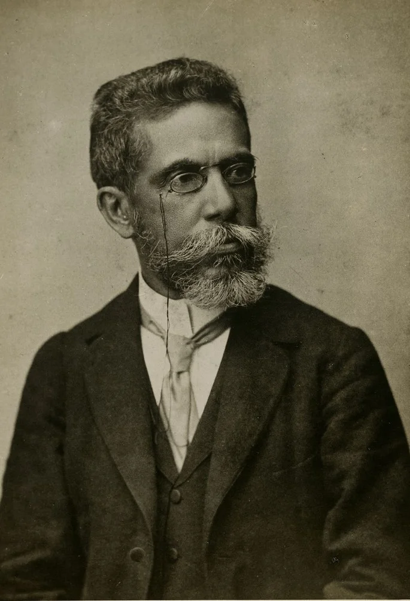

Machado de Assis

Joaquim Maria Machado de Assis foi um escritor brasileiro, considerado por muitos críticos, estudiosos, escritores e leitores o maior nome da literatura brasileira. Escreveu em praticamente todos os gêneros literários, sendo poeta, romancista, cronista, dramaturgo, contista, folhetinista, jornalista e crítico literário. Testemunhou a Abolição da escravatura e a mudança política no país quando a República substituiu o Império, além das mais diversas reviravoltas pelo mundo em finais do século XIX e início do XX, tendo sido grande comentador e relator dos eventos político-sociais de sua época.
Nascido no Morro do Livramento, Rio de Janeiro, de uma família pobre, mal estudou em escolas públicas e nunca frequentou universidade. Para o considerado crítico literário norte-americano Harold Bloom, Machado de Assis é o maior escritor negro de todos os tempos, embora outros estudiosos prefiram especificar que Machado era mestiço, filho de um descendente de negros alforriados e de uma portuguesa da ilha de São Miguel.
Faleceu em 29 de setembro de 1908 no Rio de Janeiro.